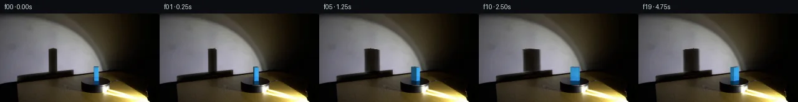

![首帧]()

Round 00
2026-11-05T03:07:58.385590+00:00像素候选变化代码 +271/−0inspection 更新
pixels 165858ef163baf5f · code 10a3dc60074e8b04
查看本轮 generate.py 真实 diff
--- previous/generate.py
+++ current/generate.py
@@ -0,0 +1,271 @@
+"""Local source-pixel transport and analytic rotating-prism reconstruction."""
+from pathlib import Path
+import json
+import numpy as np
+from PIL import Image, ImageDraw
+from scipy.ndimage import gaussian_filter, map_coordinates
+from scipy.spatial import ConvexHull
+from artifact_io import save
+
+ROOT = Path(__file__).resolve().parent
+SOURCE = np.asarray(Image.open(ROOT / 'first_frame.png').convert('RGB'))
+H, W = SOURCE.shape[:2]
+S = 4
+Y, X = np.mgrid[0:H*S, 0:W*S].astype(float)
+X = (X + .5) / S - .5
+Y = (Y + .5) / S - .5
+
+# Scene data: world depth increases away from the low, fixed camera.
+WIDTH, DEPTH, HEIGHT = 7.0, 14.0, 22.1
+CORNERS = np.array([[-WIDTH/2,-DEPTH/2,0], [WIDTH/2,-DEPTH/2,0],
+ [WIDTH/2,DEPTH/2,0], [-WIDTH/2,DEPTH/2,0],
+ [-WIDTH/2,-DEPTH/2,HEIGHT], [WIDTH/2,-DEPTH/2,HEIGHT],
+ [WIDTH/2,DEPTH/2,HEIGHT], [-WIDTH/2,DEPTH/2,HEIGHT]])
+FACES = [(0,1,5,4), (1,2,6,5), (2,3,7,6), (3,0,4,7)]
+NORMALS = np.array([[0,-1,0],[1,0,0],[0,1,0],[-1,0,0]])
+LIGHT = np.array([.45,-.87,.20]); LIGHT /= np.linalg.norm(LIGHT)
+
+
+def rotate(theta):
+ c,s = np.cos(theta),np.sin(theta)
+ R = np.array([[c,-s,0],[s,c,0],[0,0,1.]])
+ return CORNERS @ R.T, NORMALS @ R.T
+
+
+def project(p, reflection=False):
+ zfactor = .28 if reflection else -1.
+ return np.column_stack((154.05+p[:,0], 108.65-.10*p[:,1]+zfactor*p[:,2]))
+
+
+def shadow_project(p):
+ return np.column_stack((84.3+1.75*p[:,0]+.10*p[:,1],
+ 96.3-1.75*p[:,2]-.23*p[:,1]))
+
+
+def hull(p):
+ return p[ConvexHull(p).vertices]
+
+
+def spans(poly, yy):
+ """Horizontal polygon intersections, including an edge extrapolation for AA."""
+ intersections=[]
+ for a,b in zip(poly,np.roll(poly,-1,axis=0)):
+ if abs(a[1]-b[1]) < 1e-8:
+ continue
+ inside = (yy>=min(a[1],b[1])) & (yy<=max(a[1],b[1]))
+ x = a[0]+(yy-a[1])*(b[0]-a[0])/(b[1]-a[1])
+ intersections.append(np.where(inside,x,np.nan))
+ stack=np.array(intersections)
+ # Avoid all-NaN warnings outside the polygon's vertical extent.
+ valid=np.isfinite(stack).any(axis=0)
+ lo=np.min(np.where(np.isfinite(stack),stack,np.inf),axis=0)
+ hi=np.max(np.where(np.isfinite(stack),stack,-np.inf),axis=0)
+ lo=np.where(valid,lo,0); hi=np.where(valid,hi,0)
+ return lo,hi,valid
+
+
+# Recover only the occluded narrow wall strip. Source floor and setup shadows stay.
+wall_clean=SOURCE.astype(float).copy()
+for y in range(54,98):
+ for x in range(76,94):
+ t=(x-75)/19
+ estimate=(1-t)*SOURCE[y,75].astype(float)+t*SOURCE[y,94].astype(float)
+ # Restore pixels only where there is substantial evidence of occlusion.
+ d=estimate-SOURCE[y,x]
+ amount=np.clip((d.mean()-4)/15,0,1)
+ wall_clean[y,x] += np.maximum(d,0)*amount
+shadow_loss=SOURCE.astype(float)-wall_clean
+
+# Original image used as an anchored clean plate for the cuboid and reflection.
+clean=wall_clean.copy()
+for y in range(85,118):
+ if y<=109:
+ left,right=148,160
+ affected=range(150,159)
+ else:
+ left,right=146,163
+ affected=range(148,161)
… diff truncated; 184 more lines …